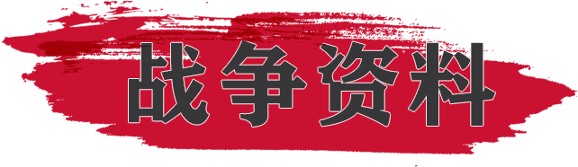
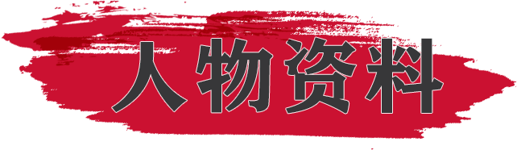
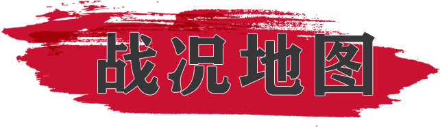
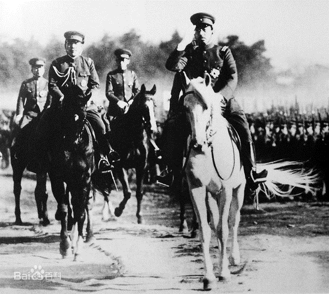
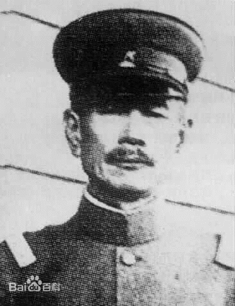
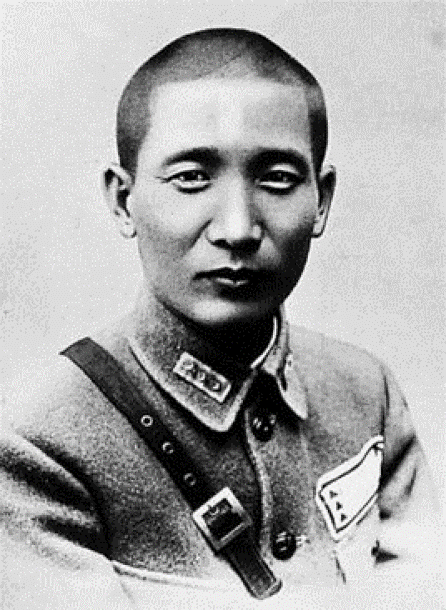
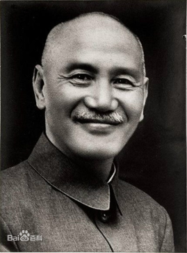
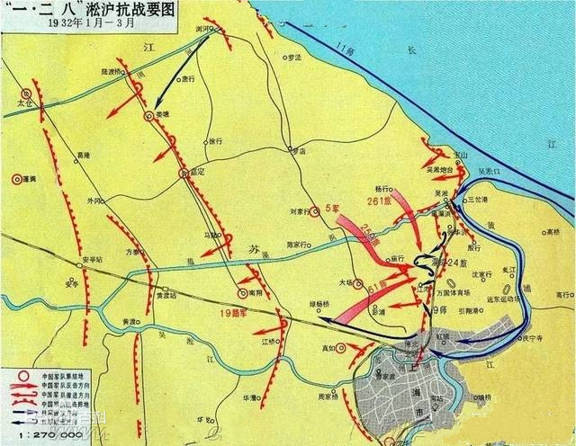
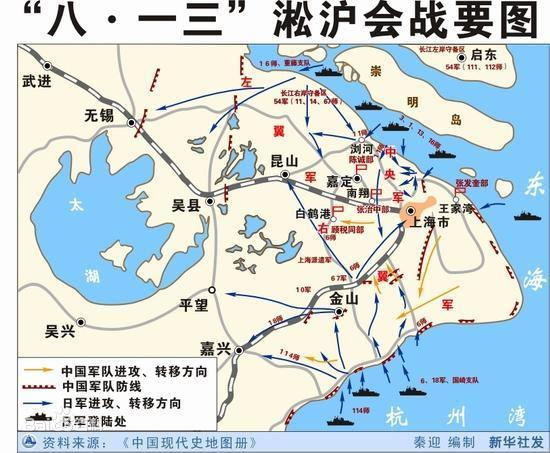

探索趣最思
游戏模式
两战资料
纪录片
题目复习
返回



淞沪抗战
一·二八事变，又称一·二八淞沪抗战，日本称上海事变或第一次上海事变、淞沪战争。是在九·一八事变之后，日本为了转移国际视线，并迫使南京国民政府屈服，于1932年1月28日晚发动的进攻上海中国守军的事件。
1932年1月28日午夜，日本海军第一遣外舰队司令盐泽幸一指挥海军陆战队分三路突袭上海闸北，第十九路军在总指挥蒋光鼐、军长蔡廷锴指挥下奋起抵抗，给日军以迎头痛击。日军对我军阵地及民宅、商店狂轰滥炸，发动了四次总攻，却均遭败绩，蒋光鼐指挥军队在闸北、江湾、吴淞、曹家桥、浏河、八字桥一带展开了多次战役，日军先后四次更换主帅，死伤近万人。
1932年2月14日，蒋介石命令由前首都警卫军87、88师和教导总队组成第五军，以张治中为军长增援十九路军参战。
1932年3月初，由于日军偷袭浏河登陆，中国军队被迫退守第二道防线。3月3日，日军司令官根据其参谋总长的电示，发表停战声明。同日，国联决议中日双方下令停战。24日，在英领署举行正式停战会议。
中国代表为外交部次长郭泰祺、军事代表戴戟、黄强等七人，日本代表为驻中国公使重光葵、军事代表植田、田代等九人.英、美、法等公使和武官也列席了会议。谈判中双方争论之点颇多，而在日军撤退时间、地点问题上尤为激烈。27日，兰普森对各款提出折衷方案五条。28日至30日双方连续讨论无结果，会议陷于停顿。中国遂将上述问题提交国联特别委员会解决。4月19日，国联特委会通过决议草案十四条，但日方对于其中第十一条联合委员会职权之规定，陆军认为干犯了统帅权，表示坚决反对。经兰普森的调解，提出折衷方案，日本代表才以在投票时弃权，表示默认。于是30日在国联大会上，将兰普森修改的决议草案通过。
由此，《中日停战协定》得以在5月5日予上海签订。
协定规定上海为“非武装区”，中国不得在上海至安亭、昆山、苏州一带地区驻军，而日本可进驻“若干”军队。国民政府一味地依赖外交手段和依靠大国来解决争端，坚持“一面抵抗、一面交涉”的政策，导致了最终局面。而英美等大国没有及时遏制日本的侵略野心，也将引火烧身、自食其果。
1932年5月5日，双方在上海签订了《上海停战协定》（又称《淞沪停战协定》）。协定规定上海为“非武装区”，中国不得在上海至安亭、昆山、苏州一带地区驻军，而日本可进驻“若干”军队。国民政府一味地依赖外交手段和依靠大国来解决争端，坚持“一面抵抗、一面交涉”的政策，导致了最终局面。而英美等大国没有及时遏制日本的侵略野心，也将引火烧身、自食其果。
一·二八淞沪抗战激起了全国人民的爱国热情。第十九路军的英勇抗战显示了中国人民不畏侵略的精神。在民众抗战热情的鼓舞和推动下，国民党内一批要员冯玉祥、孙科、吴铁城、李宗仁、陈铭枢等以通电、讲话等形式催促国民党政府支援19路军，也坚定了中国守军的抗日信心；就连阎锡山也赠送了急需的重迫击炮数门，炮弹600发，被守军视为贵物。中国守军能够支持月余，与全国民众的坚决支持是分不开的。19路军总指挥蒋光鼐曾感动地说：“淞沪之役，我军得民众莫大之帮助，近者箪食壶浆，远者输财捐助，慰劳奖饰，永不敢忘。此同仇敌忾之心，使吾人感奋欲涕。”
淞沪会战
淞沪会战（又称八一三战役、第二次淞沪抗战，日本称为第二次上海事变），是中日双方在抗日战争中的第一场大型会战，也是整个中日战争中进行的规模最大、战斗最惨烈的一场战役。
淞沪会战开始于1937年8月13日，是卢沟桥事变后，蒋介石为了把日军由北向南的入侵方向引导改变为由东向西，以利于长期作战，而在上海采取主动反击的战役。中日双方共有约100万军队投入战斗。
11月13日，国民政府发表告全体上海同胞书声明：各地战士，闻义赴难，朝命夕至，其在前线以血肉之躯，筑成壕堑，有死无退，阵地化为灰烬，军心仍坚如铁石，陷阵之勇，死事之烈，实足以昭示民族独立之精神，奠定中华复兴之基础。中国军队向吴福、澄锡国防线撤退，江阴保卫战开始；至此国军以60%的精锐部队损失殆尽的代价打破了日军三个月灭亡中国的狂妄话语，淞沪会战拉下帷幕。
战役本身持续了三个月，日军投入8个师团和2个旅团20万余人，宣布死伤4万余人；中国军队投入最精锐的中央教导总队及八十七师、八十八师及148个师和62个旅80余万人，自己统计死伤30万人。
淞沪会战中日军因国民党的顽强抵抗而损失惨重，这场战役对于中国而言，标志两国之间不宣而战、全面战争的真正开始，卢沟桥事变后的地区性冲突升级为全面战争，并彻底粉碎了日本“三个月灭亡中国”的计划。国际法泰斗厉声教曾评价称：“淞沪会战为上海和长江下游工厂与物资内迁赢得了时间，为中国坚持长期抗战起到重大作用。”
昭和天皇
主要是日军侵华背后最大得益者，日本当时名义上最高领袖，他掌握了军部的人事大权，他不喜欢的人根本就不可能当上陆军首脑。正是因为他的默许和支持，才导致淞沪会战发生，在入侵中华大地过程中，他默许了南京大屠杀发生。 
松井石根
他是一位老牌中国通，四处收买汉奸、间谍，为侵华战争准备。是当时淞沪会战的日军主要指挥官，在七七事变发生后，淞沪会战过程中可以扩大战场，谋取更多的战功，南京大屠杀的主要负责人之一，日本侵华战争的甲级战犯。
鼓吹日本军国主义，在1948年12月23日伏法。 
张治中
他是一位老牌中国通，四处收买汉奸、间谍，为侵华战争准备。是当时淞沪会战的日军主要指挥官，在七七事变发生后，淞沪会战过程中可以扩大战场，谋取更多的战功，南京大屠杀的主要负责人之一，日本侵华战争的甲级战犯。
鼓吹日本军国主义，在1948年12月23日伏法。 
蒋介石
淞沪会战的主要指挥者，当时全中国名义上的领袖。
蒋介石在庐山发表抗日演讲，表达了抗战到底的决心，他说如果战端一开，那就是地无分南北，人无分老幼，无论何人，皆有守土抗战之责任，皆应抱定牺牲一切之决心。 
淞沪抗战要图

淞沪会战要图
